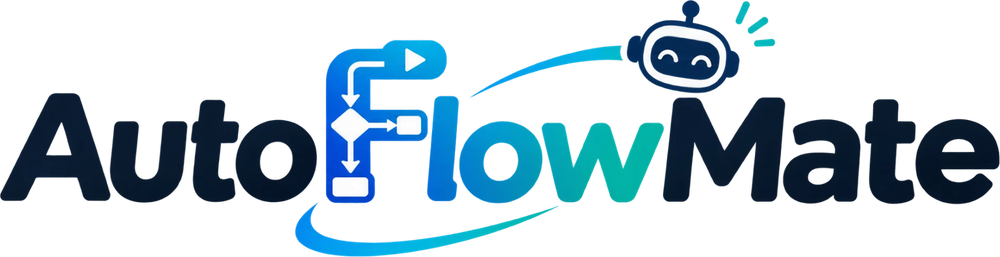
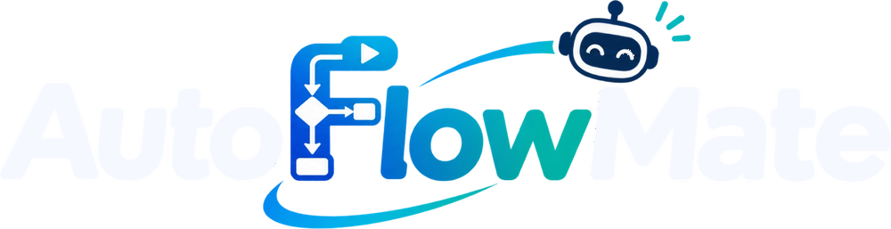
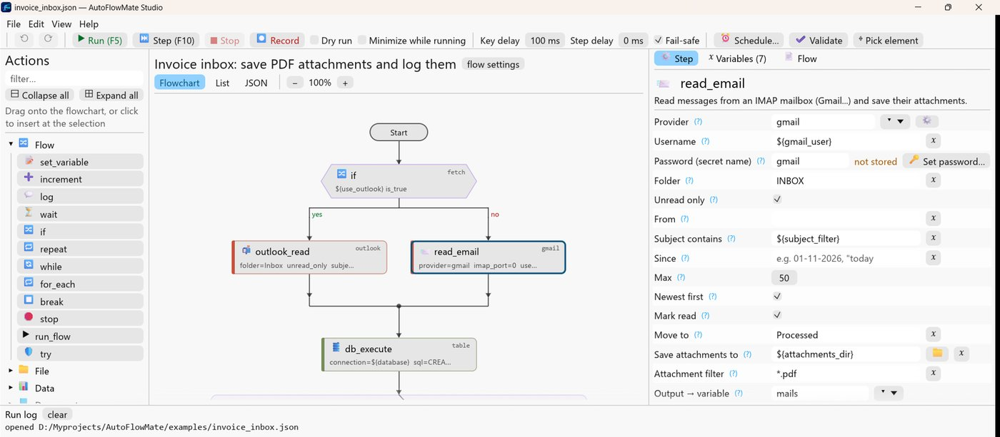
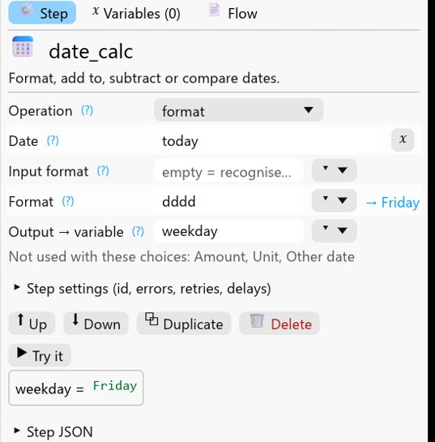
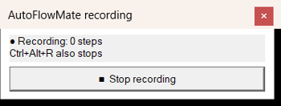
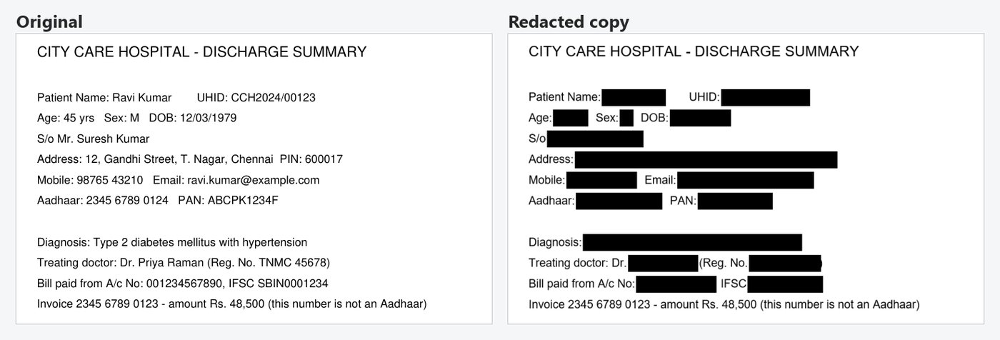
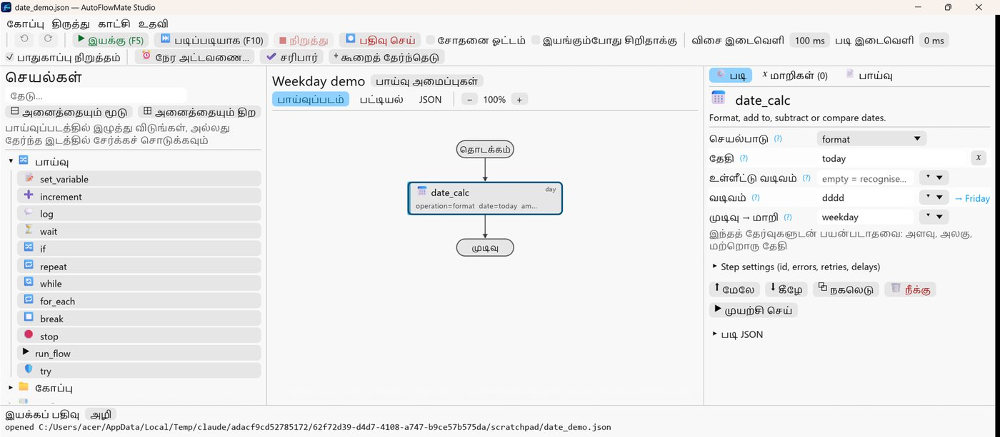

Automate the boring work on your Windows PC.
Show AutoFlowMate the steps once (copy these files, open that program, type this, read that invoice, send this mail) and it repeats them whenever you like, without mistakes. Build flows in a visual flowchart or record them like a macro.

More than 100 ready-made actions in 22 groups, for the everyday work of an office PC.
Sort downloads into folders, rename and move files, clean up old files, zip and unzip.
Read a customer list from Excel, take the item table out of a PDF invoice, write reports to Excel or CSV.
Fill letter templates with names and amounts, write reports with tables.
Send mails with attachments through Outlook or Gmail; read the inbox and save attachments.
Open a site, fill in a form, click buttons, read the result, save a picture of the page.
Click buttons and menus, type, use shortcuts: in Tally, Excel, Notepad or your own software.
Find a picture on screen and click it; read on-screen text with Windows' built-in OCR.
A built-in database, or SQL Server, MySQL, Access and Tally through ODBC.
Ask a local AI (LM Studio, Ollama) or OpenAI, Gemini, Claude to classify, summarise or extract.
Black out PAN, Aadhaar, mobile numbers, names and patient details in folders of documents, offline.
Due dates, weekdays, GST, rounding, picking an invoice number out of text.
Run every day at 9:00, at log-on, or when a file or an e-mail arrives.
Drag actions into the flowchart and fill in the details. Every field explains itself: hover a (?) to see what it expects, with examples. Choices are drop-down lists, and ▶ Try it shows what a step produces before you run the flow.
Flows are plain, readable JSON files, easy to keep, share and compare.

Press Record and do the job once. Your clicks and typing become steps you can edit and replay. A small always-on-top window shows the steps recorded and has a Stop button, and passwords typed while recording are never saved.

Point redact_files at one file or thousands and get redacted copies of the same type, on your PC, without AI: PAN, Aadhaar (checksum-verified), mobile numbers, e-mail, bank accounts, names, dates of birth, patient details, plus your own patterns.
PDFs and scans get solid black boxes with no hidden text left behind. If a file can't be checked completely, it isn't written and the flow stops. Pseudonymise account numbers into tokens only your key can turn back.

Push the mouse into a screen corner or press Ctrl+Alt+Q to stop at once. Dry runs change nothing. Passwords stay in Windows Credential Manager, never in flows.
Breakpoints (F9), step-by-step running (F10) and every variable's value at each pause.
Start from ready-made flows: redact a folder, mail merge from Excel, invoices to Excel, sort files, zip and mail a backup.
Written in Rust: no Python or runtime to install, one portable folder, and the Studio is under 50 MB.
Describe a task in plain words and let your assistant write the flow. You still get a readable file to check, and AutoFlowMate validates it, tries it with a dry run, and asks before anything that deletes, sends or submits.
/plugin marketplace add SRathinaGiri/AutoFlowMate/plugin install autoflowmate@autoflowmateagy plugin install https://github.com/SRathinaGiri/AutoFlowMategemini extensions install https://github.com/SRathinaGiri/AutoFlowMateCopy the skills/autoflowmate folder from the download into your assistant's skills folder.
Studio speaks 17 languages; choose one under View › Language. Adding another is one text file, and corrections from native speakers are welcome.

A small, transparent, local-first tool for individual PCs and small teams, not a replacement for enterprise robot fleets.
Tally exports, GST, Excel registers, PDF invoices, payment letters, mails.
Drag boxes into a flowchart, or just record what you do.
Scheduled tasks, file and mail triggers, databases, JSON output for monitoring.
Let the assistant write the flow, and keep a file you can read and control.
Windows 10 or 11. A few actions need the program they automate (Excel, Outlook, Edge or Chrome, TallyPrime).
examples\file_organizer.json.Windows shows this for programs that aren't code-signed, and AutoFlowMate's releases aren't signed yet (see the code signing policy). Click More info → Run anyway. AutoFlowMate is open source, every release is built by GitHub from the public code, and you can check your download against the .sha256 file on the release page or with gh attestation verify <zip> --repo SRathinaGiri/AutoFlowMate.
No. There's no account, telemetry or update check. Data leaves your PC only when a flow you run tells it to, for example a step that sends an e-mail or asks a cloud AI. See the privacy policy.
Yes. It's open source under the MIT licence: free to use, change and share, including at work and commercially, with no warranty.
It supports privacy work, but no tool makes a process compliant by itself. Pattern matching and OCR can miss things (unlabelled names, handwriting, poor scans), so spot-check results before sharing. The privacy features are in beta.
File, data, e-mail, database and document flows run fine on a schedule. Flows that click and type need a logged-in, unlocked session, as with most desktop automation.
Try it and report problems or ideas, polish a translation, or share an example flow. See the contributing guide.